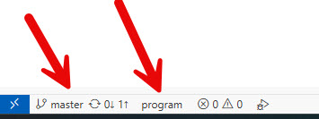

📚 Komplett Guide: Initiera Git i Nytt Projekt
Skapad: 2025-01-06
Syfte: En komplett referensguide för att skapa och konfigurera ett nytt lokalt Git-repository
🎯 Huvudproblem och Lösning
⚠️ Vanligt Problem:
När du skapar en ny mapp och öppnar den i Cursor/VS Code, kan IDE:t fortfarande visa ett Git-repository från en
överliggande mapp. Detta händer eftersom Git söker uppåt i mappstrukturen efter en .git-mapp.
✅ Lösning:
Skapa ett nytt lokalt Git-repository i din projektmapp genom att köra git init.
När Git hittar en .git-mapp i den nuvarande katalogen, används denna istället för överliggande repositories.
🔧 Komplett Steg-för-Steg Process
1 Konfigurera Git Globalt (Gör EN gång)
Innan du skapar ditt första Git-repository, konfigurera Git med dina uppgifter och preferenser:
# Sätt ditt namn
git config --global user.name "Ditt Namn"
# Sätt din email
git config --global user.email "din.email@example.com"
# Sätt 'main' som standardbranch (VIKTIGT!)
git config --global init.defaultBranch main
# Verifiera dina inställningar
git config --list
💡 Varför '--global'?
--global sparar inställningarna för alla dina Git-repositories på din dator.
Du behöver bara göra detta EN gång!
2 Navigera till Din Projektmapp
Öppna PowerShell och navigera till mappen där du vill skapa Git-repository:
# Byt katalog till din projektmapp
cd "D:\MittProjekt\MinApp"
# Kontrollera att du är i rätt mapp
pwd
3 Skapa .gitignore (Innan git init!)
Skapa en .gitignore-fil INNAN du initierar Git. Detta förhindrar att oönskade filer trackas:
# Skapa .gitignore med PowerShell
New-Item .gitignore -ItemType File
Exempel på innehåll i .gitignore:
# Node modules (om du använder npm/node)
node_modules/
# Build-filer
dist/
build/
# IDE och editor-filer
.vscode/
.idea/
*.swp
*.swo
*~
# OS-filer
.DS_Store
Thumbs.db
desktop.ini
# Temporära filer
*.log
*.tmp
.cache/
# Känslig information
.env
.env.local
4 Initiera Git Repository
Nu skapar vi det lokala Git-repository i den nuvarande mappen:
# Initiera ett nytt Git-repository
git init
# Du bör se detta meddelande:
# Initialized empty Git repository in D:/MittProjekt/MinApp/.git/
✅ Vad har hänt?
- En dold mapp
.git har skapats i din projektmapp
- Denna mapp innehåller all Git-historik och konfiguration
- Git kommer NU använda DETTA repository när du arbetar i denna mapp
- Du är INTE längre kopplad till något överliggande repository
5 Gör Din Första Commit
Lägg till dina filer och gör din första commit:
# Lägg till alla filer till staging area
git add .
# Kontrollera vad som ska committas
git status
# Gör din första commit
git commit -m "Initial commit"
⚠️ Om branchen heter 'master':
Om du glömde sätta
init.defaultBranch till 'main' och din branch heter 'master',
kan du byta namn EFTER första commit:
# Byt namn på branchen från master till main
git branch -m master main
6 Uppdatera IDE (Cursor/VS Code) - VIKTIGT!
⚠️ Särskilt Viktigt När Du Har Överliggande Git:
När du skapar ett nytt lokalt Git-repository i en mapp som ligger under ett annat Git-repository,
kommer Cursor/VS Code INTE automatiskt att uppdatera sig. Du MÅSTE tvinga IDE:t
att ladda om och upptäcka det nya lokala repositoryt.
✅ Rekommenderad Metod (Fungerar Alltid!):
- Tryck
Ctrl+Shift+P för att öppna Command Palette
- Skriv "reload" i sökfältet
- Välj "Developer: Reload Window"
- Vänta tills Cursor/VS Code har laddat om helt
✅ Detta är den säkraste metoden!
"Developer: Reload Window" tvingar IDE:t att starta om helt och omidentifiera alla Git-repositories.
Detta fungerar särskilt bra när du har skapat ett nytt lokalt Git under ett överliggande repository.
Alternativa Metoder (om reload inte räcker):
- Tryck
Ctrl+Shift+P och sök på "Git: Refresh"
- Stäng och öppna projektmappen igen i IDE:t
- I värsta fall: Stäng helt Cursor/VS Code och öppna mappen igen
Så här verifierar du att det fungerade:
Kontrollera längst ner till vänster i IDE-fönstret:

✅ Så här ska det se ut: Branch-namnet "main" och rätt mappnamn ska visas längst ner i fönstret.
Om du fortfarande ser ett överliggande repository-namn eller "master" istället för "main", behöver du ladda om igen.
Vad du ska se efter reload:
- ✅ Branch-namn: "main" (inte "master")
- ✅ Mappnamn: Namnet på din lokala projektmapp (t.ex. "Test_BS")
- ✅ Commit-antal: Rätt antal commits från ditt nya repository
- ✅ Ingen Git-historik från överliggande mappar
💡 Pro-tips:
Om du ofta arbetar med nästlade Git-repositories, kom ihåg att alltid göra
"Developer: Reload Window" efter git init. Detta sparar tid och förvirring!
🌿 Master vs Main - Förklaringen
Historik och Bakgrund
'master' var det traditionella namnet på huvudbranchen i Git, men detta har ändrats av flera skäl:
| Branch-namn |
Status |
När användes/används? |
| master |
❌ Gammalt |
Användes som standard fram till 2020 |
| main |
✅ Modernt |
Ny standard sedan 2020 (GitHub, GitLab, etc.) |
Varför Bytte Man?
- Inklusivitet: Termer som "master/slave" har historiska kopplingar som många finner problematiska
- Tydlighet: "main" är mer beskrivande - det är helt enkelt huvudbranchen
- Branschstandard: GitHub, GitLab och andra plattformar använder nu "main" som standard
- Bättre språk: "main" är enklare att förstå för internationella team
Vad Ska Du Använda?
✅ Rekommendation: Använd 'main'
- Det är den moderna standarden
- Alla nya projekt på GitHub/GitLab använder "main"
- Undviker förvirring när du pushar till remote repositories
- Framtidssäkert - alla nya verktyg förväntar sig "main"
📋 Komplett Kommandoreferens
Grundläggande Kommandon för Nytt Repository
| Kommando |
Beskrivning |
När? |
git init |
Skapar ett nytt Git-repository |
Första gången i en ny projektmapp |
git add . |
Lägger till alla filer till staging |
Innan commit |
git add filnamn |
Lägger till specifik fil till staging |
När du bara vill committa vissa filer |
git status |
Visar status på filer (staged, unstaged, etc.) |
Ofta! Innan commit, för att se vad som händer |
git commit -m "meddelande" |
Skapar en commit med ett meddelande |
När du har stageat filer |
git log |
Visar commit-historik |
För att se alla commits |
git log --oneline |
Visar kompakt commit-historik |
För en snabb överblick |
Branch-hantering
| Kommando |
Beskrivning |
git branch |
Listar alla branches |
git branch namn |
Skapar en ny branch |
git branch -m gammalt nytt |
Byter namn på en branch |
git branch -m main |
Byter namn på nuvarande branch till "main" |
git checkout branch-namn |
Byter till en annan branch |
git checkout -b ny-branch |
Skapar och byter till ny branch |
git switch branch-namn |
Modernt sätt att byta branch (Git 2.23+) |
git switch -c ny-branch |
Skapar och byter till ny branch (modernt) |
Konfigurations-kommandon
| Kommando |
Beskrivning |
git config --global user.name "Namn" |
Sätter ditt namn globalt |
git config --global user.email "email" |
Sätter din email globalt |
git config --global init.defaultBranch main |
Sätter "main" som standardbranch |
git config --list |
Visar alla Git-inställningar |
git config --global --list |
Visar globala inställningar |
git config user.name |
Visar ditt konfigurerade namn |
Informations-kommandon
| Kommando |
Beskrivning |
git status |
Visar status på working directory och staging area |
git diff |
Visar ändringar som inte är stagade |
git diff --staged |
Visar ändringar som är stagade |
git log |
Visar commit-historik |
git log --graph --oneline --all |
Visar grafisk commit-historik |
git show |
Visar detaljer om senaste commit |
git remote -v |
Visar remote repositories (om några) |
✅ Checklista för Nytt Git-Repository
Innan du börjar:
- ☐ Konfigurera Git globalt (user.name, user.email, init.defaultBranch)
- ☐ Navigera till din projektmapp
- ☐ Skapa .gitignore-fil
Initiera repository:
- ☐ Kör
git init
- ☐ Verifiera att .git-mapp skapades
- ☐ Kör
git add .
- ☐ Kör
git status (kontrollera att rätt filer är staged)
- ☐ Kör
git commit -m "Initial commit"
Verifiera:
- ☐ Kör
git branch - ska visa "main" (inte "master")
- ☐ Kör
git log - ska visa din första commit
- ☐ Öppna Cursor/VS Code - ska visa "main" längst ner
- ☐ IDE ska visa rätt antal commits
🚨 Felsökning
Problem 1: IDE visar fortfarande fel repository
Symptom: Cursor/VS Code visar commits från överliggande mapp, fel branch-namn eller historik från annat repository
✅ Beprövad Lösning (Fungerar i 99% av fallen):
- Tryck
Ctrl+Shift+P
- Skriv "reload"
- Välj "Developer: Reload Window"
Detta är
särskilt viktigt när du har ett överliggande Git-repository.
IDE:t behöver starta om för att upptäcka det nya lokala .git-mappen.
Om "Developer: Reload Window" inte räcker (sällsynt):
- Kontrollera att .git-mappen finns i din projektmapp:
ls -Force (PowerShell)
- Stäng projektmappen och öppna den igen i IDE:t
- Stäng helt Cursor/VS Code och starta om
Verifiera att det fungerade:
Efter reload ska du längst ner i IDE-fönstret se rätt branch-namn ("main") och rätt mappnamn. Se bild ovan för exempel.
Problem 2: Branchen heter "master" istället för "main"
Symptom: Efter git init skapades branch "master"
Lösningar:
- Byt namn på branchen:
git branch -m master main
- Sätt framtida standard:
git config --global init.defaultBranch main
Problem 3: Kan inte se .git-mappen
Symptom: .git-mappen syns inte i File Explorer
Lösning:
.git är en dold mapp. För att se den:
- PowerShell:
ls -Force
- CMD:
dir /a
- File Explorer: View → Show → Hidden items (kryssa i)
Problem 4: Git hittar inte min config
Symptom: git commit ger fel om user.name eller user.email
Lösning:
# Sätt namn och email
git config --global user.name "Ditt Namn"
git config --global user.email "din.email@example.com"
# Verifiera
git config --list
💡 Bästa Praxis
Gör ALLTID detta när du startar nytt projekt:
- Skapa .gitignore FÖRST - Innan git init och första commit
- Använd 'main' som branch-namn - Modern standard
- Skriv tydliga commit-meddelanden - Börja med verb ("Add", "Fix", "Update")
- Committa tidigt och ofta - Små, logiska commits är bättre än stora
- Kontrollera med git status - Innan VARJE commit
- Ha en README.md - Beskriv projektet
PowerShell-tips för Git:
- ❌ Fungerar INTE i PowerShell:
cd mapp && git init (dubbel-ampersand)
- ✅ Gör istället: Dela upp i två kommandon:
cd mapp
git init
Eller använd semikolon:
cd mapp; git init
📚 Sammanfattning - Snabbguide
Komplett kommandosekvens för nytt projekt:
# 1. Engångskonfiguration (om inte redan gjort)
git config --global user.name "Ditt Namn"
git config --global user.email "din.email@example.com"
git config --global init.defaultBranch main
# 2. Navigera till projektmapp
cd "D:\MittProjekt"
# 3. Skapa .gitignore (använd editor eller New-Item)
New-Item .gitignore -ItemType File
# Redigera .gitignore med dina ignorer-regler
# 4. Initiera Git
git init
# 5. Lägg till filer och committa
git add .
git status
git commit -m "Initial commit"
# 6. Verifiera
git branch
git log --oneline
git status
🔗 Viktiga Resurser
📝 Dokumentet skapad av Kent Lundgren
Senast uppdaterad: 2025-01-06
Senaste uppdatering: Lade till viktig information om "Developer: Reload Window"
och visualisering av korrekt Git-branch i IDE:t
Använd denna guide som referens när du skapar nya Git-repositories!